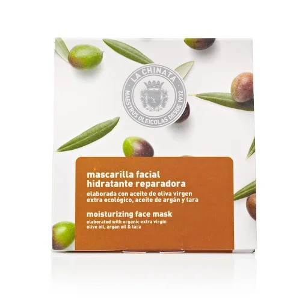

Cosmetic Made in Spain
聯繫我們
產品展示
Mascarilla hidratante y rejuvenecedora

33 Kr Content: 8x50ml
La mascarilla hidratante la chinata utiliza un sustrato rico en sal y oligoelementos para reparar profundamente la piel, produciendo una fuerte hidratación y suavidad, mejorando la apariencia de la piel. Por un lado, está hecho de evoo, un hidratante natural, antioxidante y antienvejecimiento, que también contiene proxenetas que promueven la oxidación celular, refrescan y revitalizan. Del mismo modo, el aceite de nuez marroquí tiene efectos antioxidantes, antienvejecimiento, regenerativos, recombinantes y acondicionadores en la piel.
Vida Copyright © 2024 All rights reserved